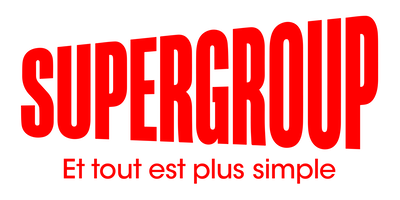
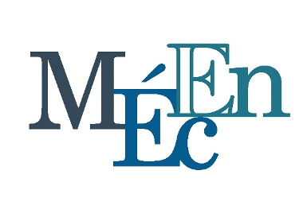
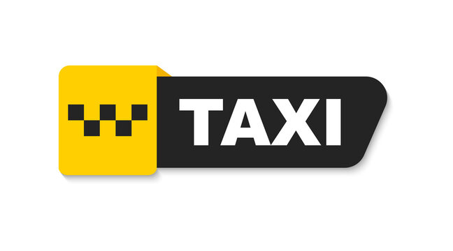
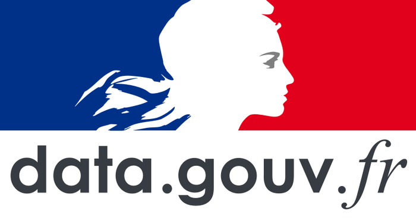

M2 • Projets
Projets Master 2 (en cours)
Travaux de synthèse M2 : mémoire, outils data avancés et mises en production pour partenaires externes.
Voir l'état d'avancementÉtudiant M2 • PDR • Portfolio 2025-2026
Data enthusiast & storyteller : je combine l'analyse statistique, la programmation et le design pour documenter les enjeux sociaux et proposer des solutions concrètes.
Faire défilerTravaux de synthèse M2 : mémoire, outils data avancés et mises en production pour partenaires externes.
Voir l'état d'avancement

SUPERGROUP Paris – Refonte des pipelines de données et automatisation des rapports commerciaux.
Consulter le rapport

Plateforme Streamlit pour piloter une flotte de taxis : visualisations interactives, scénarios de trajets et suivi des KPI.
Voir l'applicationComparaison de modèles (Random Forest, SVM) pour prédire le bien-être subjectif à partir de données qualitatives.
Lire le rapportData apps, dashboards et modèles prédictifs conçus en M1 pour des cas d'usage réels et académiques.
Voir les projets M1
Étude factorielle des accidents et conception de dashboards pour sécuriser les infrastructures cyclables autour de Tours.
Consulter le dossierTravaux en sciences sociales, analyses d'enquêtes et visualisations interactives réalisés durant la L3.
Voir les projets L3Master 2 • Data & Analyse avancée
Projets de synthèse, mémoire et mise en production d'outils data pour des partenaires externes.
Stage à SUPERGROUP Paris
Automatisation des rapports e-commerce, déploiement de pipelines SQL & R.
Master 1 • Data & Analyse
Conception d'applications Streamlit et modélisations prédictives pour des clients publics.
Licence 3 • Université de Tours
Projets en sciences sociales et visualisation, analyse territoriale des politiques publiques.
dumontroty.pro@gmail.com
Envoyer un messageMon CV stage actualisé + dossiers de projets.
Télécharger le PDFSuivez les mises à jour et projets sur GitHub / réseaux.
Voir mon GitHub